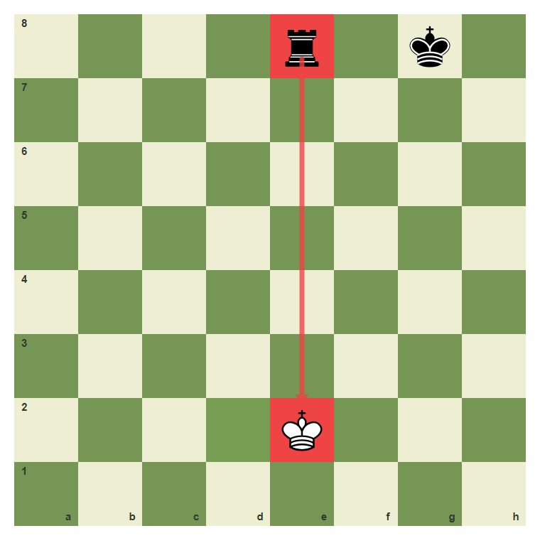
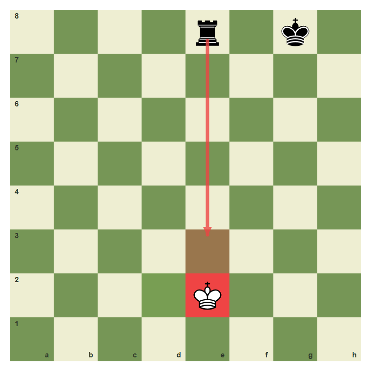
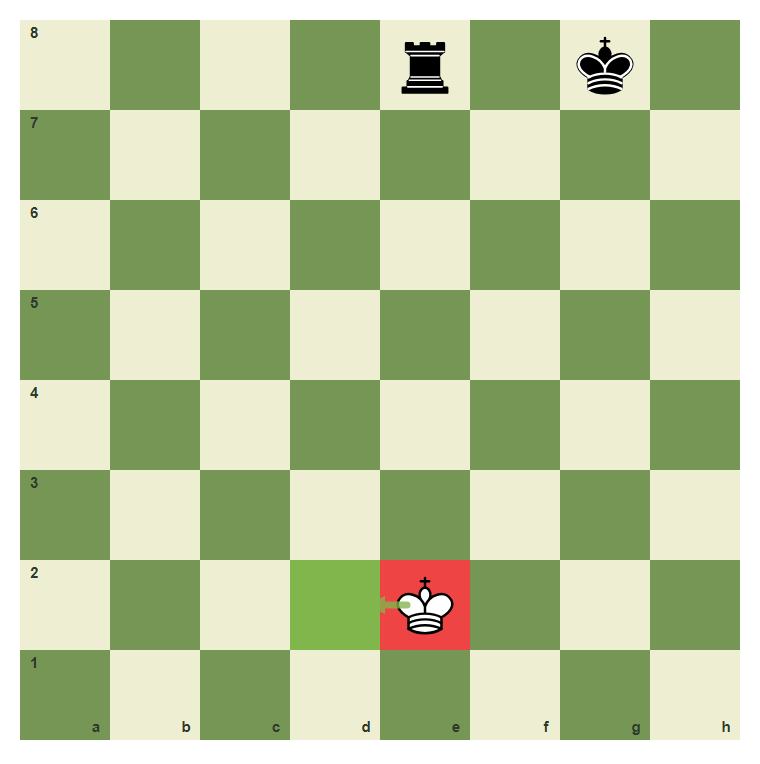
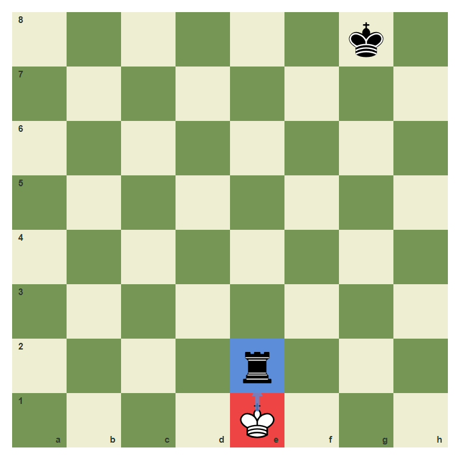
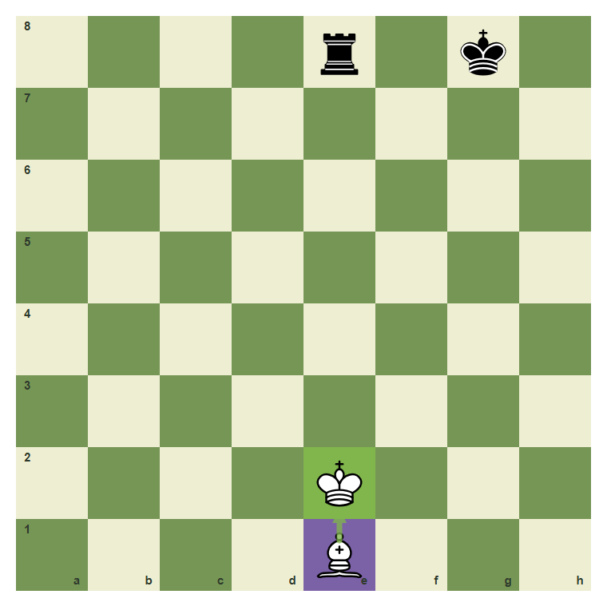
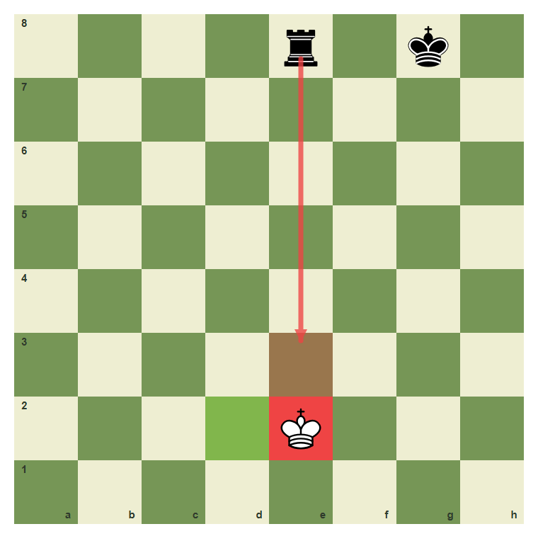

Safe Squares For The King
Escape check without walking into another one.
- Identify the line of check.
- Choose king moves that leave danger behind.
- Compare moving, blocking, and capturing the checking piece.
The King Needs Legal Air
When your king is in check, normal plans stop. You must get out of check by moving the king, blocking the line, or capturing the checking piece.
The e-file check

The rook checks down the e-file. The king on e2 must leave the line.
The e-file is still unsafe

Moving along the same file can remain dangerous. Look for a square off the line.
Step to d2

The square d2 is not on the rook line.
Sometimes capture the checker

If the checking piece is close and undefended, the king may capture it.
A block can also work

A bishop can block the rook line on e2 only if the square and piece movement allow it.
Escape the rook check
Move the king from e2 to d2.

Common mistake: stay on the checking line
If the rook controls the e-file, the king should not stay on that file.

The unsafe square e3 is still on the rook line.
Chapter Checkpoint
When in check, you may:
When in check, you may:
A safe king square must be:
A safe king square must be:
The first priority in check is:
The first priority in check is: